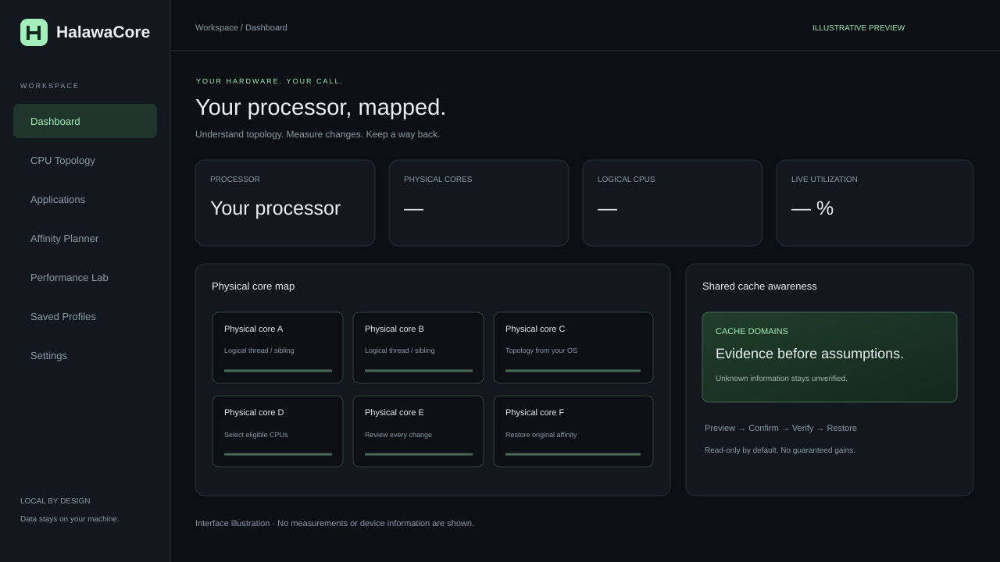

01 / TOPOLOGY
اعرف ما وراء أرقام المعالج
شاهد الأنوية الفعلية وخيوط SMT ومجموعات L3، مع أرقام النظام وتفاصيل العضوية. يتكيّف العرض مع المعلومات المتاحة بدل افتراض ترتيب ثابت.
Physical core
CPU ACPU B
رسم للعلاقة، وليس قياسًاافهم علاقة الأنوية والخيوط والكاش، راقب تطبيقاتك، وجرّب توزيعها على المعالج بثقة. HalawaCore يضع المعلومات الحقيقية أمامك، والقرار بيدك.
رسم توضيحي للمعمارية · ليس بيانات جهازك
لا تحتاج تخمين أرقام الأنوية أو الاعتماد على وصفات ثابتة. اقرأ ما يكشفه نظامك، وراجع كل تجربة قبل تطبيقها.
شاهد الأنوية الفعلية وخيوط SMT ومجموعات L3، مع أرقام النظام وتفاصيل العضوية. يتكيّف العرض مع المعلومات المتاحة بدل افتراض ترتيب ثابت.
اعرض العمليات المتاحة، استهلاكها وخيوطها، وافحص العلاقات بينها. اختر العملية المستهدفة بدقة بدل تعديل برامج تحمل اسمًا مشابهًا.
استكشف مجموعات L3 في معالجات AMD X3D عند توفر دليل موثوق. إن كانت المعلومات ناقصة، يظهر أنها غير مؤكدة بدل تخمين مجموعة الكاش.
سجّل حالة أساسية وتجربة ثم حالة الاستعادة. راقب استخدام المعالج والذاكرة وعدد الخيوط؛ لا يحوّل البرنامج هذه القراءات إلى أرقام FPS وهمية.
راجع العمليات والخيوط المتأثرة، أكّد اختيارك، ثم استعد الإعدادات الأصلية المسجلة لكل خيط ما دام البرنامج يعمل.

حمّل الإصدار المناسب، افتحه، ثم استخدم الواجهة التي تفتح تلقائيًا في متصفحك.
فك ضغط الملف وشغّل البرنامج الجاهز. بيانات جهازك تُقرأ محليًا، ويبدأ بوضع القراءة فقط.
راجع خريطة الأنوية، اختر تطبيقًا، وسجّل قياسًا أساسيًا قبل تعديل توزيع العمل.
فعّل التجارب إن أردت، راجع القائمة وأكّد التغيير. استعد الأنوية الأصلية قبل إغلاق البرنامج.
طبقة خاصة لكل نظام، وواجهة مشتركة. المعلومات غير المتاحة تبقى غير مؤكدة، والقيود تُعرض قبل أي تجربة.
راجع متطلبات إصدارك ←قراءة طوبولوجيا النظام والكاش والعمليات. تجارب الأنوية تبدأ بالأجهزة ذات مجموعة معالج واحدة، وتبقى حالات CPU Sets الصريحة للقراءة فقط.
دعم أولي · راجع حدود الإصدارخرائط الأنوية وSMT وNUMA والكاش، وبيانات CPPC وAMD X3D التي يكشفها الكيرنل. الصلاحيات وقيود النظام محترمة.
اختبارات فعلية + سيناريوهات محاكاةقد تستفيد لعبة من الكاش، وقد يحتاج تطبيق آخر ترددًا أعلى أو جميع الأنوية. تقييد الأنوية تجربة قد تحسّن أو تقلّل الأداء، وليس زر تسريع مضمونًا. إعدادات BIOS والتعريفات وأوضاع الجدولة العامة لا تُعدّل تلقائيًا.
مفتوح المصدر · تحليل محلي · بدون حساب